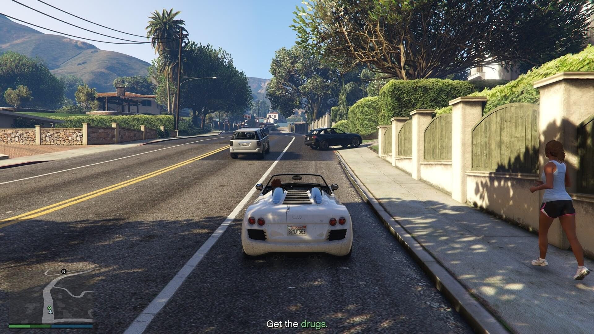
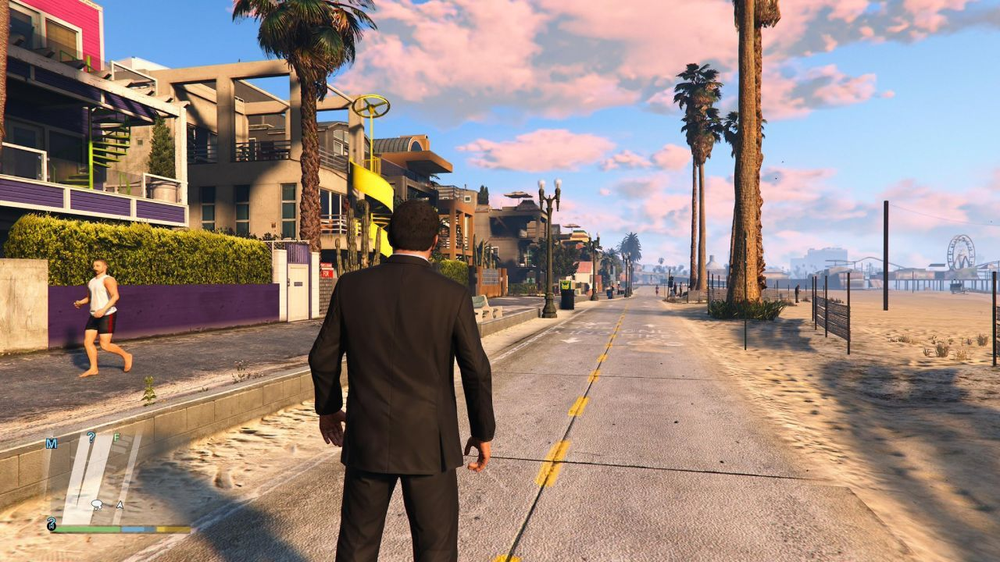

GTA V: Deluxe Edition
Дата выхода: 14 апр. 2015
Жанр: Экшены, Приключенческие игры
Разработчик: Rockstar North
Издатель: Rockstar Games
Платформа: PC
Тип издания: Repack
Язык интерфейса: Русский, Английский, MULTi11
Язык озвучки: Английский
Таблетка: Вшита (Goldberg)
Системные требования:
ОС: Windows 7, 8, 10, 11 (64-bit)
Процессор: Intel Core 2 Q6600
Оперативная память: 4 GB ОЗУ
Видеокарта: Nvidia 9800 GT
Место на диске: 113 GB
Установить GTA V
Инструкция по установке:
1. Скачайте установщик .torrent
2. Запустите файл установки в любом удобном Torrent-Клиенте
3. Установите .exe файл и запустите его
4. Следуйте инструкции внутри установщика
Размер файла: 107.67 GB
Описание игры
Grand Theft Auto V (5) покажет вам город Лос-Сантос, город солнца, процветания, настоящая гордость западного мира. Ой, простите, так было в прошлом. Сегодня это пристанище уже никому не нужных звезд и совершенно неперспективных реалити-шоу. К тому же город погряз в экономических проблемах. В общем, далеко не самое завидное место для жизни. И уж тем более совершенно неподходящее место для достойного честного заработка.
После долгих ожиданий скачать гта 5 через торрент полностью бесплатно теперь можно и компьютер. Сюжет ГТА 5 рассказывает истории сразу трех колоритных персонажей: Майкл – бывший грабитель банков, пытающийся начать нормальную жизнь и найти общий язык с детьми; Франклин – молодой афроамериканец, член уличной банды, стремящийся оставить все в прошлом и начать новую жизнь; Тревор – бывший летчик и грабитель, подсевший на запрещенные препараты и ставший совершенно неуравновешенным, метается от дельца к дельцу, желая сорвать куш.
Судьба сводит вместе ребят, не удовлетворенных жизнью, ни старой, ни новой, и они решают провернуть большое рискованное дело. Это дело либо позволит им обрести надежду на лучшую жизнь, либо... В общем, сюжет невероятно интригующий и захватывающий. Игра до краев наполнена фирменным черным юмором, высмеиванием поп-культуры и харизматичностью героев. И все это в огромном, детализированном, красочном, до мелочей проработанном мире ГТА 5.
Скриншоты из игры
 |
 |